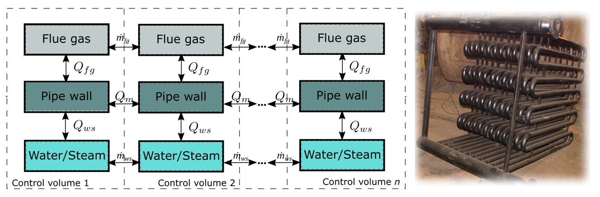
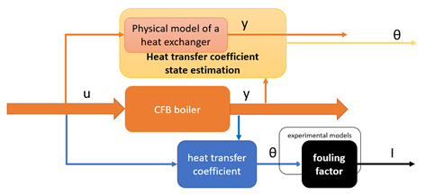
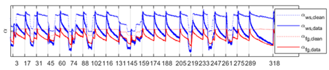
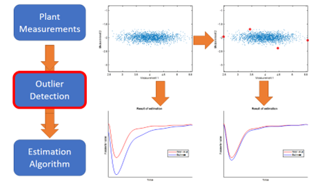

FouMon is a fouling monitoring component. The component aims at monitoring on-line the state of fouling at heat exchange surfaces, using various alternative and redundant approaches. The approaches include direct calculations using on-line process measurements and laws of physics, a model-based approach using state estimation of uncertain fouling-related parameters, and indexes computed from therein. For model-based state estimation approaches, a heat exchanger model (HE-model) has been derived and the ensemble Kalman filter (EnKF) implemented to fuse the model with on-line data.
In particular, the FouMon component is developed for estimation of combustion boiler superheater heat exchanger surfaces loaceted in the flue gas path. Both short-term (between soot blowings) and long-term (between maintenances) fouling and smoothing can be monitored, but main focus has been set on short term sootblowing.
The FouMon component uses a physical simulation model of a heat exchanger. For this purpose, a physical model for main phenomena between fluegas and the water-steam system has been derived, guided by availability to validate the model using on-line measurements from the process (steam and flue gas temperatures, flows, etc.). The HE-model (heat exchanger model) can be used for simulation of other heat exchangers as well. The model is available for download.
Figure 1. Modeling and simulation of a heat exchanger. Model structure (left) and a typical tube rack setup (right).
The chosen EnKF (Ensemble Kalman filtering) state estimation technique can be applied for alternative state estimation purposes, given that a suitable plant model and measurements are provided. The EnKF algorithm is well known in the academia. However, as no CST/SYSID toobox Matlab implementation is yet available, a Matlab tool has been coded. The COGNITWIN Matlab EnKF tool is available for download.
To support data driven modeling of system dynamics, a general purpose data quality tool (ODtool) focusing on detection of outliers has been developed and applied in the context of fouling monitoring. Creation of a purely data-driven model requires good quality data. Plant measurements tend to have occasional errors that must be taken into consideration for the self-learning digital twin to be robust. Therefore, in addition to standard measurement verification by detecting sensor faults (1) and frozen values etc. (2), an additional outlier detection (3) method is implemented for this application. Identifying the nontrivial outliers from a batch of multidimensional measurement vectors supports the process of finding a valid digital twin model, thus enhancing the cognitive capabilities of the approach. The tool is available for download.
The FouMon component originates from solving the WP3 pilot problem on fouling monitoring, and has been tuned and tested using real full scale boiler plant design and measurement data (WP3 pilot). The basic approach is illustrated in Figure 2.
Figure 2. State estimation applied to monitoring of fouling.
Figure 3. Data-driven FouMon heat transfer estimate from pilot during Nov 2021 (top plot), a corresponding model-based EnKF estimate (middle plot), and dimensionless adaptive fouling factor indexes. Subscript ‘ws’ refers to water-steam side, ‘fg’ to flue gas side.
Figure 3 shows a demonstration of the on-line estimated heat transfer coefficients for a superheater in the flue gas path. The data-driven estimate for heat transfer in a clean (after sootblowing) pipe is also illustrated. The estimates are constructed in two alternative ways. Estimates of the heat transfer coefficient in a physical model can be computed by data assimilation. Dimensionless indexes (FF) can be generated for providing process state independent indication of the state of fouling. Figure 3 illustrates these using pilot data.
Figure 4. Basic principle of ellipsoidal peeling. Removal of few outliers can improve the performance of identification significantly.
The physical model and measurements are set up in the Matlab m-files. Input data (measurements) are provided as numerical vectors. Interactive tuning is enabled by Matlab interface/graphics. Estimation outcomes are provided as numerical vectors.
A link with StreamPipes is enabled by an OPC-UA client/server component (see FUSE OPC-UA tool).
The tool is implemented using Matlab language (m-files). Matlab from the Mathworks is required (FouMon has been tested on Matlab 2020b).
Matlab (2020b) is available on all major operating systems, including Windows 7, Ubuntu 16, Debian 9, MacOS 10 and newer. No particular Matlab Toolboxes are required. Open software Octave is known to be able to interpret m-files, but FUSE-codes have not been tested with Octave.
The HE-model, the EnKF-tool and ODtool are free for use (contact Istvan.Selek@oulu.fi, Enso.Ikonen@oulu.fi or Markus.Neuvonen@oulu.fi, respectively). The CFB boiler design data and plant measurement data are Sumitomo and pilot proprietary.
TRL 6 (demonstrated in a relevant environment).
Liukkonen, M., A. Kettunen, J. Miettinen, E. Ikonen, I. Selek, M. Neuvonen, A. Hansen and M. Edelborg (2022). Hybrid Modelling Approach to Optimize Fouling Management in a Circulating Fluidized Bed Boiler. Fluidized bed conversion conference 2022 (FBC24), 8–11 May 2022, Gothenburg.
The EnKF tool for Matlab is available for download at http://cc.oulu.fi/~iko/COGNITWIN/
The HE-model and ODtool are available for download.